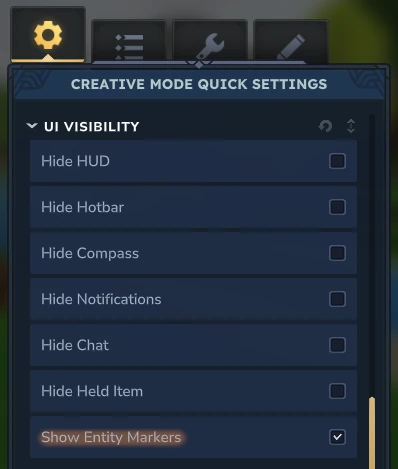

To make a World feel alive... It needs to be populated!
There are a few ways to spawn NPCs.
In the Environment
Spawn Markers inside Prefabs
More Complex Spawn Beacons and Spawn Supression
For environments, we'll utilize the 'WorldNPCSpawn' Assets located under the 'NPC/Spawn/WorldNPCSpawn' folder.
These assets offer a lot of control over spawning and despawning NPCs but as each variable is relatively
self-explantory and includes a short description of what each does,
we'll focus on how to change what to spawn, each NPCs rarity, and the Environment reference.
MyBiomeNPCs
WorldNPCSpawn
NPCs
5 List Entries
Environments
1 List Entries
...
Under the NPCs category, you can set each entity type to spawn, how rare it is to other NPCs to spawn,
what the NPCs can spawn on, and if they spawn in flocks like a hunting pack or mother and child.
MyBiomeNPCs
WorldNPCSpawn
NPCs
5 List Entries
0
Id
[NPC Asset Name]
Weight
100
Spawn Block Set
[BlockSet Name]
Spawn Fluid Tag
Flock
...
Lastly, you'll want to reference the Environments these NPCs can spawn in.
MyBiomeNPCs
WorldNPCSpawn
Environments
1 List Entries
0
[Environment Asset Name]
...
Due to the nature of any amount of NPC files being able to reference an Environment,
I'd recommend creating a new Environment in your mod file to have complete control over what
NPCs can spawn in your biomes. Also, you may want to create 2 enviroments, 1 for the above ground
and 1 for below in case you want the NPCs to spawn differently in different areas.
If you're not seeing anything spawn, you could have your 'Spawn Density' inside your 'Environment' file set to '0'!
Next, we'll go over Spawn Markers which are found under the 'NPC/Spawn/SpawnMarker' folder.
Spawn Markers are marked positions inside prefabs where the game will spawn an NPC when the player gets close.
Going into the file, again most of it is self-explantory so I'll only go over the important bits!
MyPrefabNPC
SpawnMarker
NPCs
1 List Entries
Exclusion Radius
[# of Blocks]
Max Drop Height
[# of Blocks]
Realtime Respawn
Deactivation Distance
[# of Blocks]
...
First of all, we have the same system of a list of NPCs and Weights except now you can set a respawn time
either in, in-game time or realtime after the NPC dies which is controlled with the 'Realtime Respawn' toggle below.
MyPrefabNPC
SpawnMarker
NPCs
1 List Entries
0
Id
[NPC Asset Name]
Weight
100
Realtime Respawn Time
[# of Seconds]
Spawn After Game Time
Flock
Realtime Respawn
...
After that, feel free to go in game, in the Prefab Editor, and position yourself where you want the NPC to spawn,
then type the command /spawning markers add [Asset Name]
A new spawn marker will be placed where your character was! If you can't see the Spawn Marker, open your inventory
in Creative Mode, and scroll down in the 'Creative Mode Quick Settings' until you reach the 'Show Entity Markers'
option under the 'UI Visibility' and enable it!

Now when you reload the world with the Prefabs, you should see your NPCs spawning! If not, they could have failed
due to a couple reasons which you can check your Player Logs for. The most common would be if the fall distance is too
far which is controllable via the 'Max Drop Radius' variable or it attempts to spawn the NPC inside a block.
Or as of recent, I've found that NPC Markers occasionally won't load in viewports! It is early-access after all!
I won't go into as much detail with Beacons and Spawn Suppression as it goes too off topic for World Generation
but they're found in the same 'NPC/Spawn' folder and can be placed using the same command
/spawning [beacons/suppression] add [Asset Name]!
Next Up